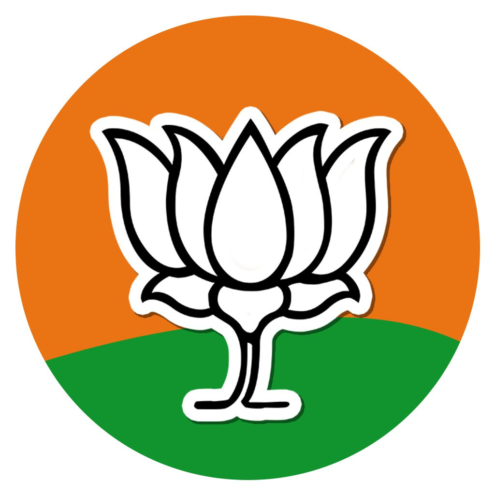
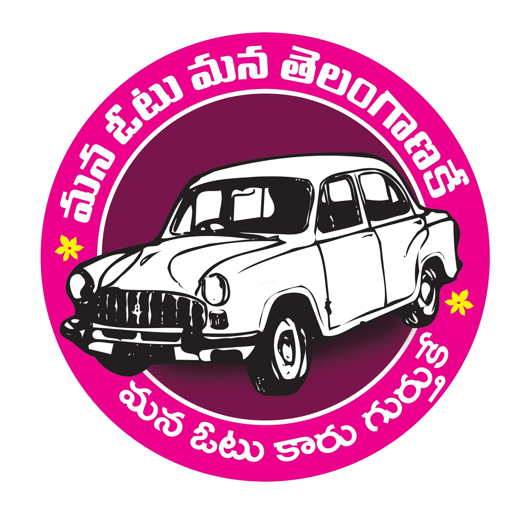
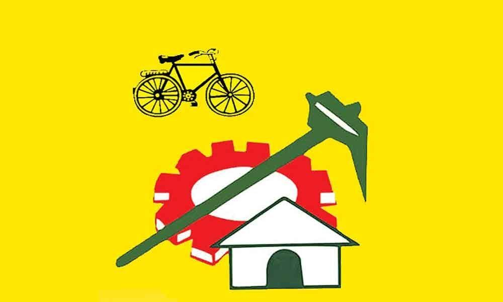

BJP
Bharatiya Janata Party (BJP) was established with a vision to bring in “Cultural Nationalism,” in 1980. The BJP is a national party and is the most prominent member of Sangh Pariwar family. The history and spirit of BJP can be traced back to the Bharatiya Jan Sangh. Bharatiya Jan Sangh (BJS), predecessor party of BJP, was founded in 1952 which won 3 seats in the First Loksabha Election in India and continued as a political party for 24 years. Subsequently the BJS merged into the Janata Party in 1977 and formed a coalition government. BJP was formed after the fallout of Janta Party coalition government in 1979.
- Founded: 6 April 1980
- President: Bandi Sanjay Kumar
- General Secretary: M Srinivalusu
- Parliamentary Chairperson: Narendra Modi

TRS
Telangana Rashtra Samithi, popularly known as TRS party, was founded on 27th April 2001 by Kalvakuntla Chandrashekar Rao (KCR). The one and only objective of TRS Party then was to achieve a separate statehood to Telangana. With its uncompromising spirit to make aspirations for Telangana a reality, TRS Party played a pivotal role in carrying forth a sustained agitation to achieve statehood for Telangana.
- Founded: 27 April 2001
- President: K.Chandrashekar Rao
- General Secretary: Joginapally Santosh Kumar
- Parliamentary Chairperson: K.T.Rama rao

Congress
Indian National Congress, byname Congress Party, broadly based political party of India. Formed in 1885, the Indian National Congress dominated the Indian movement for independence from Great Britain. It subsequently formed most of India’s governments from the time of independence and often had a strong presence in many state governments.
- Founded: 28 December 1885
- President: Anumula Revanth Reddy
- General Secretary: Avinash Pandey
- Parliamentary Chairperson: Sonia Gandhi

TDP
The TDP was formed in March 1982 by Nandamuri Taraka Rama Rao (popularly known as NTR), a former star and director of Telugu-language movies in Andhra Pradesh.At the time of its formation, the party’s major goal was to oust the Indian National Congress (Congress Party) from the state government, which it had controlled since the establishment of Andhra Pradesh in 1956. At the same time, however, the TDP expressed its willingness to support Congress or other parties at the national level.
- Founded: 29 March 1982
- President: N.Chandrababu Naidu
- General Secretary: Nara Lokesh
- Parliamentary Chairperson: N.Chandrababu Naidu

YSR telangana party
The YSR Telangana Party (YSRTP) is an Indian regional political party based in the state of Telangana. It was founded by Y. S. Sharmila in 2021
- Founded: 8 July 2021
- President: Y.S.Sharmila
- Parliamentary Chairperson: Y.S.Sharmila